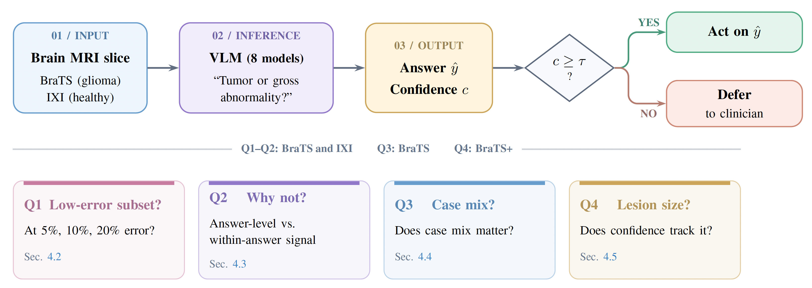
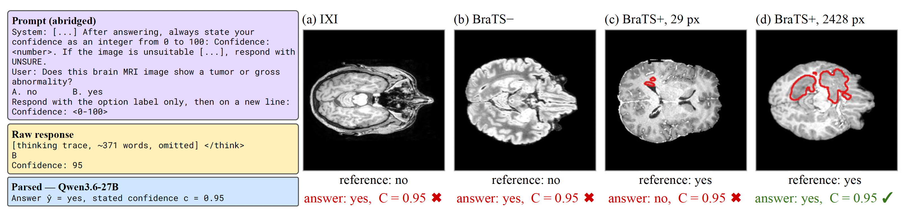
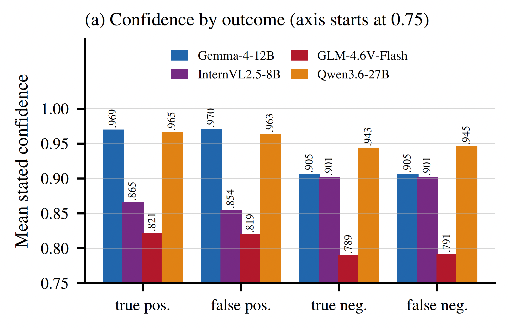
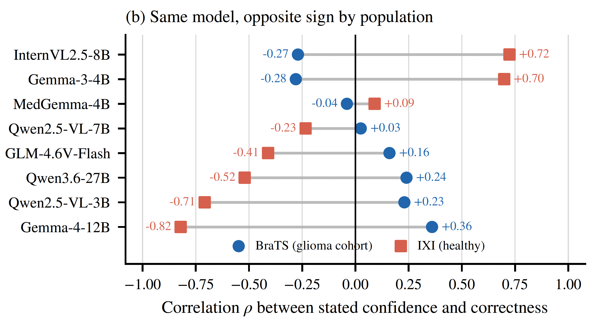
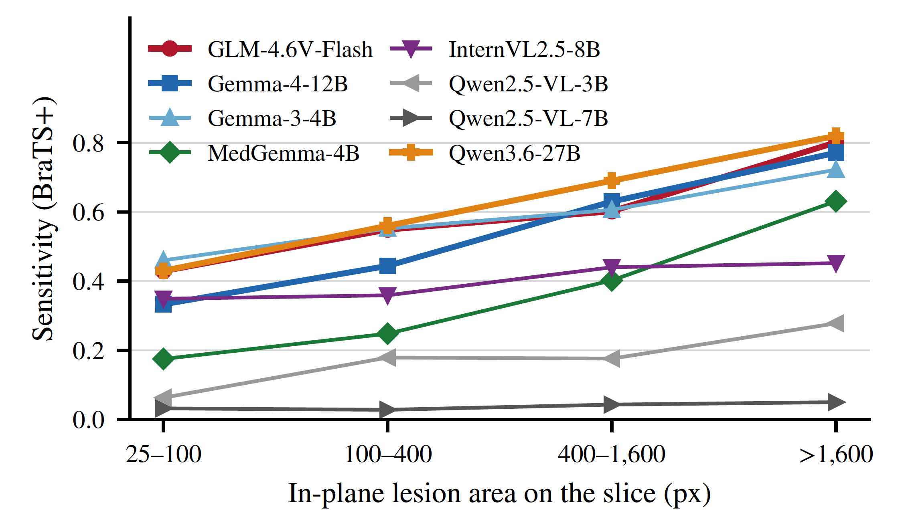

Selective prediction
Thresholds are judged by both accepted-slice coverage and empirical error, not confidence alone.

Vision-language models can report confidence alongside an answer, but that number is useful for selective prediction only if it ranks reliable answers above errors. This work audits stated confidence from eight open-weight VLMs on 3,888 brain MRI slices drawn from post-treatment glioma volumes and healthy volunteers.
We evaluate coverage at fixed error budgets, separate answer-level confidence bias from within-answer signal, test sensitivity to population composition, and measure whether confidence tracks lesion area. The results show that high stated confidence often reflects which answer a model gives more than whether that answer is correct, limiting confidence-only answer-or-defer policies.
Thresholds are judged by both accepted-slice coverage and empirical error, not confidence alone.
Answer preference can dominate the within-answer signal that should separate correct from incorrect cases.
A high score is not treated as permission to automate; unsupported cases remain deferred for review.
BraTS supplies glioma-positive and glioma-negative slices; IXI supplies a healthy comparison population. Each model returns an answer and stated confidence, then the same outputs are examined through four complementary questions rather than a single aggregate accuracy score.

7 / 8
models retain no nonempty BraTS subset at 5% error
24%
best retained coverage at a 10% error budget
0.969 / 0.970
Gemma-4 confidence on true vs. false positive answers
Gates that look safe on healthy brains can favor models that are highly specific but miss many tumor slices.
Strictly monotone recalibration cannot improve selective coverage because it does not change confidence ranking.

The failure is structured rather than random. Confidence is strongly tied to the answer a model produces, shifts with the evaluation population, and remains nearly unchanged across lesion sizes even when detection sensitivity changes substantially.



The repository contains the complete evaluation pipeline: slice-level reference construction, resumable inference, response parsing, selective-risk analysis, covariance decomposition, case-mix experiments, subject-clustered bootstrap, and paper table/figure regeneration. Medical images and raw model transcripts are not redistributed.
git clone https://github.com/amir-sbg/VLM-Answer-or-Defer.git
cd VLM-Answer-or-Defer
conda env create -f environment.yml
conda activate deferral
export PYTHONPATH="$PWD"
make test
make paper@inproceedings{sabbaghziarani2027answer,
title = {Answer or Defer? Testing {VLMs}' Stated Confidence on Brain {MRI}},
author = {Sabbaghziarani, Amir and Plis, Sergey},
booktitle = {IEEE/CVF Winter Conference on Applications of Computer Vision},
year = {2027},
note = {Under review}
}